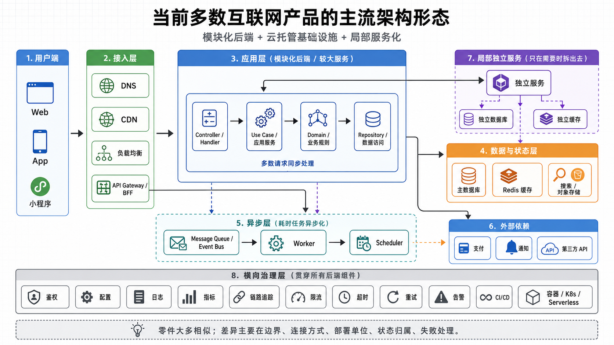

阶段五 / 共八阶段
云原生架构时代
2015 – 2022 · 当云计算不再只是"租服务器"，而是成为软件的默认运行环境
产品架构演进之旅 · 面向 AI 产品经理的叙事课件
单体 → 分层 → SOA → 微服务 → 云原生 → Prompt → RAG+Agent → Multi-Agent
01 / 起源
从"管理集装箱"到"让云替你操心"
微服务时代让服务独立部署成为可能，但它留下了一个巨大的后遗症：服务数量爆炸后，谁来管理这些服务？谁来分配服务器？谁来监控几百个服务的健康状况？工程师从"写代码的人"变成了"调集群的人"。云原生的核心命题就是：让平台替你管基础设施，你只管写业务逻辑。
要理解云原生为什么诞生，我们必须先回到微服务晚期的运维困境。到了 2015 年前后，使用 Kubernetes 管理微服务的公司发现：虽然容器化解决了"独立部署"的问题，但它带来了新的麻烦——K8s 集群本身的配置极其复杂，一个 YAML 文件动辄几百行；服务之间的网络通信需要手动配置；不同的云厂商（AWS、Azure、阿里云）有各自不同的 API 和概念；开发团队不得不把大量时间花在"调集群"而不是"写代码"上。
"我们发明了 Kubernetes 来管理容器，然后发现我们需要另一个工具来管理 Kubernetes。"
—— 2017 年某云原生工程师的自嘲
与此同时，云计算本身也在发生质变。AWS 在 2006 年推出 EC2（虚拟机租赁）时，"云"的含义是"远程服务器"。但到了 2015 年，云已经演变成一个完整的软件运行平台——它不仅提供服务器，还提供数据库、消息队列、认证服务、AI 能力……开发者不需要从零搭建基础设施，只需要"调用云的能力"。
关键转折点不是单一事件，而是六股力量的汇聚：
六股推动力
① 微服务的治理困境（2014–2016）：当一家公司有几百个微服务时，服务发现、负载均衡、故障恢复、安全认证、流量控制……这些"横切关注点"重复出现在每个服务的代码里。工程师们意识到：应该把通信管理从业务代码中彻底抽离。这直接催生了"服务网格"（Service Mesh）概念——Istio（2017）和 Linkerd 的诞生标志着这一思想的落地。
② 云计算的全面成熟（2015–2018）：AWS、Azure、Google Cloud 三大云厂商的竞争进入白热化。它们不仅提供基础设施（IaaS），还推出了平台级服务（PaaS）和软件级服务（SaaS）。企业开始意识到：自建数据中心是上一代的事，未来的默认选项是云。 Gartner 2018 年预测：到 2025 年，80% 的企业将关闭传统数据中心。云计算从"可选方案"变成了"默认假设"。
③ Serverless 的兴起（2014–2019）：AWS Lambda（2014）提出了一种激进的想法：开发者连容器都不用管了，只需要上传一段代码（函数），云平台负责运行、扩容、监控的一切。"Function as a Service"（FaaS）让"无服务器"从概念变成现实。虽然 Serverless 不是万能的，但它极大地拓展了人们对"云能做什么"的想象力——如果服务器可以透明到不存在，那数据库、消息队列、AI 模型为什么不可以？
④ 声明式基础设施与 GitOps（2014–2019）：Terraform（2014）和 Kubernetes 的声明式 API 带来了一场思维革命：以前管理员用命令行"操作"基础设施（"启动一台服务器"），现在用配置文件"描述"基础设施（"我需要 5 台服务器，每台 4 核 8G"），平台自动把现实状态调整到与描述一致。GitOps（2017）进一步提出：把基础设施配置放在 Git 仓库里，任何改动都通过 Pull Request 审查后自动生效。这让基础设施管理像代码管理一样可追溯、可回滚。
⑤ 云原生计算基金会（CNCF）的成立（2015）：Linux 基金会旗下成立了 CNCF，旨在标准化云原生技术生态。Kubernetes、Prometheus、Envoy 等项目被捐献给 CNCF，获得了中立的治理和广泛的企业背书。CNCF 的定义逐渐成为行业共识："云原生技术让组织能够在公有云、私有云和混合云环境中构建和运行可扩展的应用。"
⑥ 12-Factor App 与云原生方法论（2011–2017）：Heroku 的工程师们在 2011 年总结了"12-Factor App"方法论——一套让应用天然适合云环境的最佳实践（代码与配置分离、无状态进程、端口绑定、并发通过进程模型……）。这些看似简单的规则，实际上定义了"云原生应用"应该长什么样。后来 CNCF 将其扩展为更完整的云原生定义。
那么，科学认知发生了怎样的变化？在微服务时代，人们相信"拆得越细越灵活"。到了云原生时代，认知升级为"平台抽象"（Platform Abstraction）——核心思想是：工程师不应该关心服务器在哪里、容器怎么调度、网络怎么配置，他们只需要声明"我想要什么"，平台负责实现"怎么做"。
这个认知转变有一个深刻的哲学根源：从"命令式"（Imperative）到"声明式"（Declarative）。命令式是你一步步告诉计算机"做什么"（"先启动 A，再启动 B，然后连接它们"）；声明式是你告诉计算机"我想要什么状态"（"我希望 A 和 B 是连通的"），计算机自己找出最优路径。Kubernetes、Terraform、甚至后来的 React、Flutter 都采用了声明式范式——这不仅是技术选择，更是一种思维范式的迁移。
为什么是云原生而不是别的方向？因为企业发现，微服务带来的运维复杂度已经超出了人工管理的极限。如果没有自动化平台，100 个微服务的运维工作量可能是 10 个单体的 100 倍。云原生的本质是用软件来管理软件——让平台层接管重复、繁琐、容易出错的基础设施管理工作，释放工程师的创造力。
但请注意：云原生时代仍然没有解决应用层面的智能问题。平台可以帮你管好基础设施，但它不能帮你写好业务逻辑，不能帮你理解用户需求，不能帮你做出智能决策。这些"认知层面的自动化"，要等到下一个阶段——AI Native——才成为可能。
关键事件时间线
-
2011
Heroku 发布"12-Factor App"方法论，定义了云原生应用的设计原则。Docker 的前身 dotCloud 平台开始内部使用容器技术。
-
2013
Docker 开源，容器化革命启动。同年，Google 内部使用多年的 Borg 系统开始酝酿开源版本（即后来的 Kubernetes）。
-
2014
AWS Lambda 发布，"Serverless"概念诞生。Terraform 开源，声明式基础设施管理开始流行。Kubernetes 开源。
-
2015
CNCF（云原生计算基金会）成立。Kubernetes 1.0 发布。Prometheus 开源成为云原生监控标准。OpenTracing 项目启动。
-
2016
容器编排"三国杀"：Docker Swarm vs Kubernetes vs Apache Mesos。Kubernetes 开始展现生态优势。
-
2017
Istio 服务网格发布。GitOps 概念正式提出（Weaveworks）。Knative 项目启动（Serverless on K8s）。
-
2018
Kubernetes 成为容器编排的事实标准。Gartner 预测 2025 年 80% 企业将关闭传统数据中心。"云原生"成为企业战略关键词。
-
2019
Knative 正式发布。Dapr（分布式应用运行时）开源。GitHub Actions 发布，CI/CD 进一步民主化。
-
2020
COVID-19 疫情加速全球云 adoption。远程办公工具（Zoom、Slack、Notion）流量暴增，全部基于云原生架构。
-
2021
FinOps 基金会成立，云成本管理成为独立学科。WebAssembly（Wasm）在云端开始兴起，被视为容器之后的下一代运行时。
-
2022
ChatGPT 发布，AI 应用爆发，对云原生基础设施提出新的挑战（大模型训练、推理优化、GPU 调度）。云原生进入"AI 就绪"新阶段。
02 / 人物
那个时代的人，在干什么
2015 年到 2022 年，科技公司的办公室里出现了新一代工程师：平台工程师、SRE、云架构师。他们的日常工作不再是"写业务代码"，而是"构建和维护让业务代码跑起来的平台"。同时，普通用户也在不知不觉中成为了"云原生生活"的居民。
小陈 · 平台工程师 / SRE
2016 – 2022 / 字节跳动 / 美团 / 金融科技公司
小陈的工位像一个小型 NASA 控制中心。五块屏幕上跳动着各种仪表盘：左边是 Terraform 的执行日志——他刚提交了一个 Pull Request，要把测试环境的 Kubernetes 集群从 20 个节点扩容到 50 个，Terraform Plan 显示了所有将要变更的资源（红色表示删除，绿色表示新增）。中间是 ArgoCD 的可视化界面——一个 GitOps 工具，实时同步 Git 仓库里的 YAML 配置和 K8s 集群的实际状态，绿色小方块表示"已同步"，黄色表示" drift（漂移）"。右边是 Prometheus + Grafana，监控着几百个微服务的健康状态。他每天的工作是：审查开发团队提交的基础设施变更 PR、优化 K8s 的 Pod 调度策略、处理云厂商的账单告警——上个月某团队的测试环境忘记关闭，多花了 8 万元。他最骄傲的时刻是：用 Terraform 在一分钟内把整套系统从 AWS 北京区切换到新加坡区（灾备演练）。他最头痛的是：开发团队经常把"请求太多导致服务挂了"的锅甩给平台——"K8s 是不是又出问题了？"
小美 · 云架构师 / FinOps 工程师
2018 – 2022 / 跨国企业 / SaaS 公司
小美的工作是从"商业视角"设计技术架构。她手里有三张王牌：AWS、Azure、阿里云——她的公司采用了"多云策略"，不把所有鸡蛋放在一个篮子里。每天早上，她先看云成本仪表盘：上个月总支出 120 万，其中 45% 是闲置资源。她制定了自动关机策略：晚上 8 点后，非生产环境自动缩容到最小配置。她正在推动一个"Serverless 迁移"项目：把几个访问量波动极大的服务从 K8s 迁移到 AWS Lambda——"平常每小时 10 次调用，促销时每小时 10 万次，用 Lambda 可以省 70% 的成本。"她还负责和云厂商的商务谈判，利用竞争关系压价。她最骄傲的时刻是：老板问她"我们上云到底省了多少钱？"她打开 FinOps 仪表盘，精确到每个服务的 ROI。她最担心的是：某个云厂商突然涨价，或者 geopolitics 导致数据不能出某个区域——这让她开始关注"混合云"和"边缘计算"。
小华 · 普通 SaaS 用户 / remote worker
2019 – 2022 / 全球远程办公一代
小华是一名设计师，2020 年疫情后彻底转为远程办公。她的工作流完全运行在云上：用 Figma 做设计（实时协作，3 个同事同时在一个文件里改图）、用 Notion 写文档（自动同步到所有设备）、用 Slack 和团队沟通（集成了 20 个机器人，GitHub 提交、Jira 工单、Zoom 会议提醒全部自动推送）、用 Zoom 开视频会议（1080p，50 人同时在线）。她完全不知道什么是 Kubernetes 或 Lambda，但她能感知到云的力量："以前我要把设计稿存 U 盘传给同事，现在我在 Figma 里改完，他们刷新一下页面就看到了。"她也经历过云的脆弱：某天 Notion 宕机了 4 小时，她所有会议笔记都看不到——那一刻她意识到：云不是万能的，它只是把单点故障从"我的电脑"转移到了"某家公司"。
"2020 年 3 月，Zoom 的日活用户从 1000 万暴增到 3 亿。如果没有云原生架构的弹性扩容能力，全球远程办公的转型不可能发生得这么快。"
—— Zoom 工程师回顾疫情初期的技术挑战
03 / 产品
那个时代诞生了什么
云原生时代的产品可以分为两类：一类是"让云更好用"的基础设施工具（Kubernetes、Terraform、Istio……），另一类是"活在云上"的应用产品（Notion、Figma、Zoom……）。前者是云原生架构的技术基石，后者是云原生给普通用户带来的直接体验。
Kubernetes (K8s)
2014 开源 · 2015 1.0 · 容器编排平台
云原生时代的"操作系统"。它自动化管理成百上千个容器的部署、扩缩容、故障恢复和负载均衡。如果你把云比作城市，K8s 就是城市的交通指挥中心——它决定每个集装箱（容器）放在哪艘船（服务器）上，船沉了自动转移，货物多了自动加船。
Terraform
2014 · HashiCorp · 基础设施即代码
用声明式配置文件描述整个云基础设施（服务器、数据库、网络、DNS），然后一键创建或更新。Terraform 让基础设施管理像 Git 管理代码一样——可追溯、可审查、可回滚。支持 AWS、Azure、GCP、阿里云等所有主流云厂商。
AWS Lambda / Azure Functions / Cloud Functions
2014/2016/2017 · Serverless 计算
"无服务器"计算的实现。开发者只需上传一段代码函数，云平台自动处理运行环境、扩容、监控的一切。按调用次数和运行时间计费，不用时不花钱。适合事件驱动的场景（图片上传后自动压缩、收到消息自动处理）。
Istio / Linkerd
2017 / 2016 · 服务网格
把微服务之间的通信管理（流量控制、安全认证、故障注入、链路追踪）从业务代码中抽离，作为独立的基础设施层注入每个服务旁边。Istio 是功能最全的，Linkerd 是轻量级的。它们让开发者只需关注业务逻辑，通信治理由平台统一处理。
ArgoCD / Flux
2018 / 2019 · GitOps 工具
GitOps 的实现工具。它们持续监控 Git 仓库中的配置文件，自动将集群状态与 Git 中的期望状态同步。开发团队只需提交 PR 修改配置，审查通过后自动部署。实现了"Git 即唯一事实来源"的理念。
Dapr
2019 · Microsoft · 分布式应用运行时
微软开源的"分布式应用运行时"，为微服务提供标准化的构建块：状态管理、发布/订阅消息、服务调用、秘钥管理……开发者可以用任何语言编写服务，Dapr 提供统一的分布式能力。它降低了构建云原生应用的门槛。
Notion / Figma / Miro
2016 / 2012 / 2011 · 云原生协作工具
新一代云原生 SaaS 产品的代表。它们的核心特征：实时协作（多人同时编辑）、跨设备同步（任何浏览器打开都是最新版本）、API 优先（可以被其他工具集成）。它们完全构建在云上，没有本地安装包的概念。
Zoom / Slack / Discord
2011 / 2013 / 2015 · 远程通信
云原生时代的通信基础设施。Zoom 的视频会议、Slack 的团队协作、Discord 的社区语音——它们都利用了云的全球分布式架构和弹性扩容能力。2020 年疫情期间，Zoom 的日活从 1000 万暴增到 3 亿，云原生的弹性是其能够承受的关键。
Vercel / Netlify / Cloudflare Workers
2015 / 2014 / 2017 · 前端云 / Edge 计算
"前端云"平台，让前端开发者可以直接把代码部署到全球 CDN 节点上，无需关心服务器。Vercel 让 Next.js 应用一键全球部署，Cloudflare Workers 让代码运行在离用户最近的边缘节点上。它们代表了云原生的极致：开发者甚至不需要知道"服务器"的存在。
04 / 认知
那个时代的人，心里在想什么
云原生时代不仅改变了技术的交付方式，更深刻地重塑了企业和个人的思维模式。这四个心理转变，为后来的 AI Native 奠定了"平台化"和"自动化"的文化基础。
认知一：基础设施 = 代码（IaC）
人们开始相信，服务器、网络、数据库这些"硬件"应该像软件一样被管理——用版本控制、代码审查、自动化测试。Terraform 和 Kubernetes YAML 的出现，让运维工程师从"敲命令的人"变成了"写配置的人"。这个认知的深层含义是：一切可重复的操作都应该被代码化。 这为后来 AI 时代的"提示工程"和"工作流编排"埋下了种子——如果基础设施可以声明式描述，那么 AI 行为为什么不可以？
认知二：云 = 默认选项
在云原生之前，企业的默认假设是"我们有自己的服务器"。到了 2020 年，默认假设变成了"我们运行在云上"。"自建数据中心"从骄傲变成了负担。 Gartner 的预测变成了现实：企业不再问"要不要上云"，而是问"怎么上好云""怎么管理多云成本"。这种"云优先"（Cloud First）的思维，后来演变成了"AI 优先"（AI First）——当 AI 能力成为云平台的标准组件时，"要不要用 AI"变成了"怎么用 AI"。
认知三：可观测性 > 监控
在单体时代，"监控"意味着看 CPU 和内存使用率。在云原生时代，"可观测性"（Observability）意味着从系统的外部输出推断内部状态——日志（Logs）、指标（Metrics）、链路追踪（Traces）三大支柱。人们意识到：当系统复杂到没人能完全理解时，唯一可靠的管理方式是让系统自己告诉你它怎么了。 这个"让系统自我解释"的认知，直接预示了 AI 时代的"可解释性"（Explainability）需求。
认知四：成本 = 架构决策（FinOps）
云原生的"按用量付费"模式让成本从"固定投入"变成了"可变支出"。2021 年 FinOps 基金会的成立标志着：云成本管理成为了一门独立学科。 工程师开始关心"这段代码跑 1 小时要花多少钱"。架构决策直接影响账单：用 Lambda 还是 K8s？存热数据还是冷数据？这个"成本意识"在 AI 时代变得更加关键——GPT-4 的一次 API 调用可能是几美分，但当你的产品有百万用户时，一天的推理成本可能就是几十万。
"云原生的终极目标不是让系统跑得更快，而是让工程师不再为基础设施操心。当平台足够成熟时，注意力会从'怎么跑'转向'跑什么'——而这正是 AI 接管'跑什么'的前提。"
—— 一位云原生布道者对"云原生与 AI Native 关系"的解读
05 / 关键词
关键词词典
云原生时代创造了一套全新的技术词汇。这些词今天仍是云计算和基础设施领域的核心术语，也是理解 AI Native 架构的必要前置知识。
KEYWORD 01
云原生
Cloud Native
CNCF 的官方定义："云原生技术让组织能够在公有云、私有云和混合云环境中构建和运行可扩展的应用。" 它不是一个具体的技术，而是一种方法论——包括容器化、微服务、声明式 API、DevOps、持续交付等。通俗理解：云原生 = "为云设计的应用 + 自动化的运维方式"。
KEYWORD 02
无服务器 / 函数即服务
Serverless / FaaS
开发者只需编写和上传函数代码，云平台自动处理运行环境、扩容、监控的一切。"无服务器"不是真的没有服务器，而是服务器对开发者不可见。 按调用次数和运行时间计费，不用时不产生费用。适合事件驱动、流量波动大的场景。代表：AWS Lambda、Azure Functions、Vercel Edge Functions。
KEYWORD 03
基础设施即代码
Infrastructure as Code / IaC
用代码（而不是手动操作）来定义和管理基础设施。核心思想：如果创建 10 台服务器的操作可以写成一段代码，那这段代码可以被版本控制、审查测试、重复执行。 代表工具：Terraform（多云）、CloudFormation（AWS）、Pulumi（用编程语言写）。
KEYWORD 04
服务网格
Service Mesh
把微服务之间的通信管理从业务代码中抽离出来，作为独立的基础设施层。实现方式：在每个服务旁边部署一个"Sidecar"代理，所有进出流量经过代理。开发者写业务代码时不需要考虑重试、超时、熔断、认证——服务网格统一处理。 代表：Istio、Linkerd。
KEYWORD 05
声明式 API / GitOps
Declarative API / GitOps
声明式：你描述"我想要什么状态"，系统自己找出"怎么达到这个状态"。与"命令式"（一步步告诉系统怎么做）相对。GitOps：把系统的期望状态放在 Git 仓库里，任何改动通过 PR 审查后自动同步到生产环境。Git 成为"唯一事实来源"。
KEYWORD 06
可观测性
Observability
从系统的外部输出（日志、指标、链路追踪）推断内部状态的能力。监控是"我知道要看什么"，可观测性是"我不知道要看什么，但系统能告诉我哪里出了问题"。 三大支柱：Logs（日志）、Metrics（指标）、Traces（链路追踪）。代表工具：Prometheus、Grafana、Jaeger、ELK Stack。
KEYWORD 07
多云 / 混合云
Multi-cloud / Hybrid Cloud
多云：同时使用多个云厂商（如 AWS + Azure），避免 Vendor Lock-in（被单一厂商绑定）。混合云：同时使用公有云和私有数据中心，敏感数据放本地，弹性负载放云上。云原生技术（Kubernetes、Terraform）让应用可以在不同云之间无缝迁移。
KEYWORD 08
云成本管理
FinOps
FinOps = Finance + DevOps，是一门管理云成本的工程学科。核心实践：持续 visibility（看清钱花在哪）、团队协作（工程、财务、业务一起决策）、自动化优化（自动关停闲置资源、自动选择 cheapest 实例类型）。在云原生时代，架构决策直接影响利润表。
关键词之间的联系
-
微服务数量爆炸
→ 需要 →
容器化（Docker）
→ 需要 →
容器编排（K8s）
→ 需要 →
声明式管理
-
K8s 配置复杂
→ 催生 →
GitOps（ArgoCD/Flux）
→ 依赖 →
声明式 API
→ 扩展 →
基础设施即代码（Terraform）
-
容器管理标准化
→ 催生 →
CNCF 生态
→ 推广 →
云原生标准
→ 促成 →
多云 / 混合云
-
服务间通信复杂
→ 催生 →
服务网格（Istio）
→ 提供 →
流量治理 & 可观测性
→ 增强 →
系统韧性
-
云 = 按量付费
→ 催生 →
FinOps（成本管理）
→ 影响 →
架构决策
→ 推动 →
Serverless（极致成本优化）
-
云原生平台成熟
→ 释放 →
工程师生产力
→ 让工程师聚焦 →
业务逻辑 & AI 应用
→ 铺垫 →
AI Native 时代
易混淆概念辨析
概念对比
IaaS（基础设施即服务）
云厂商提供原始计算资源（虚拟机、存储、网络）。你需要自己装操作系统、配置环境、部署应用。比如 AWS EC2。比喻：云厂商给你一块地和水电，你自己盖房子。
PaaS（平台即服务）
云厂商提供运行应用的平台（操作系统、运行时、数据库都配好了）。你只需上传代码。比如 Heroku、Google App Engine。比喻：云厂商给你一个精装修的房子，你带家具入住。
SaaS（软件即服务）
云厂商直接提供完整的软件，你只需注册账号使用。比如 Gmail、Salesforce、Notion。比喻：云厂商给你一个酒店房间，你拎包入住。
FaaS（函数即服务）
Serverless 的实现形式。你只上传单个函数，云平台管理一切运行环境。比如 AWS Lambda。比喻：云厂商给你一个自动厨房，你只需提供菜谱，它自动买菜、做饭、洗碗。
监控（Monitoring）
基于已知指标观察系统状态。"我知道 CPU 使用率很重要，所以我盯着它。" 适合可预测的问题。工具：Prometheus、Nagios。
可观测性（Observability）
基于系统输出推断未知问题。"我不知道哪里会出问题，但系统日志和链路追踪能帮我找到根因。" 适合复杂的分布式系统。工具：Jaeger、Honeycomb。
命令式（Imperative）
一步步告诉系统"怎么做"。比如 Shell 脚本："先安装 Nginx，再修改配置文件，然后启动服务。" 适合简单、一次性的操作。
声明式（Declarative）
告诉系统"我想要什么状态"，系统自己找出路径。比如 Kubernetes YAML："我希望有 3 个 Pod 在运行。" 适合复杂、持续维护的场景。
06 / 课程
推荐阅读与课程
这些资源不是技术教程，而是帮助你理解"云原生时代的思维方式"——适合产品经理和 FDE 阅读。
01
《Cloud Native Patterns》
Cornelia Davis · 书籍 · 中文译本《云原生模式》
一本从架构设计视角讲解云原生的书。作者用大量实际案例解释：为什么云原生应用应该"无状态"？为什么"反脆弱"比"高可用"更重要？如何设计能在云上自动恢复的系统？适合产品经理理解云原生架构的设计哲学，而非具体配置命令。
架构视角
产品经理友好
02
CNCF 免费云原生课程
Cloud Native Computing Foundation · 在线课程 · 免费
CNCF 官方推出的云原生入门课程，涵盖容器、Kubernetes、服务网格、可观测性等核心概念。课程设计得很通俗——用类比和图示讲解技术原理，而非命令行操作。产品经理可以跳过动手实验部分，只读概念章节。
免费
概念通俗
03
AWS / Azure / GCP 云从业者认证课程
各大云厂商 · 在线课程 · 免费/付费
云厂商的"从业者级别"认证课程（如 AWS Cloud Practitioner）专门为非技术人员设计。它们用商业语言解释云服务的价值："S3 存储如何帮企业省 70% 的存储成本？""Lambda 如何让初创公司零运维上线？" 学完能对云服务的商业模式有系统理解。
商业视角
零技术门槛
04
《The Unicorn Project》
Gene Kim · 书籍 · 中文译本《独角兽项目》
《凤凰项目》的续集，但这次主角是一位开发者而非 IT 经理。故事讲述她如何在一家传统零售公司推动云原生和 DevOps 转型。书中对"平台团队""内部开发者体验""技术债务"的描写非常真实。产品经理读完会理解：为什么开发者工具的体验直接影响产品交付速度。
故事驱动
开发者体验
07 / 全景
一图看懂：现代互联网产品的"身体结构"
在进入 AI Native 的世界之前，让我们先停下来，仔细看看当今大多数互联网产品的"身体"——它由哪些器官组成？它们之间如何传递信息？为什么这个结构运行了十几年，却依然面临根本性的局限？

图：当前多数互联网产品的主流架构形态 · 模块化后端 + 云托管基础设施 + 局部服务化
这张图看似复杂，但它其实和一家公司的组织架构非常相似。从上到下，你可以把它理解为：
用一句话概括每一层
用户端 = 销售前台，直接面对客户。
接入层 = 公司前台和总机，负责把客户引导到正确的部门。
应用层 = 业务部门的办公室，真正处理客户请求的核心团队。
数据层 = 公司档案室，存放所有业务记录和资料。
异步层 = 后勤部门，处理那些不需要立刻完成的后台任务。
外部依赖 = 外包合作方，比如支付通道、短信服务商。
横向治理层 = 公司的规章制度、审计、安保、IT 支持——贯穿所有人。
零件大多相似；差异主要在边界、连接方式、部署单位、状态归属、失败处理。
—— 架构图底部的注释
08 / 数据流
一个请求的一生：当你在 App 上点"下单"时，发生了什么
最好的理解方式，不是背定义，而是跟着一个真实请求走一遍。想象你在美团 App 上点了一份外卖——从点击"下单"到骑手接单，数据在这个架构中经历了什么？
-
用户端 · 你打开美团 App，点击"下单"
你的手机（App）把请求封装成一个 HTTP 数据包，里面包含：用户 ID、商品信息、收货地址、支付方式。这个数据包就像一封快递单，准备发出。
-
接入层 · DNS 把请求"导航"到正确的服务器
你的手机先问 DNS（域名系统）："meituan.com 在哪里？" DNS 返回一个 IP 地址——就像查地图找到公司的门牌号。然后请求到达 CDN，如果请求的是图片或静态页面，CDN 直接返回缓存内容（就像便利店就近发货）。如果是动态请求（如下单），继续往后走。
-
接入层 · 负载均衡把请求"分发"给最闲的服务器
每天有数千万人同时用美团，一台服务器肯定扛不住。负载均衡就像一个智能前台，它会看哪台服务器当前最空闲，把你的请求转发过去。如果某台服务器挂了，它会自动跳过，把请求发给健康的机器——这叫故障转移。
-
接入层 · API Gateway 检查"你是谁，你要干什么"
API Gateway（API 网关）是请求的"安检门"。它检查三件事：① 你有没有权限（鉴权，看你登录了没）；② 你的请求格式对不对；③ 你有没有超过调用频率限制（限流，防止恶意刷单）。通过后，它把请求转发给应用层。
-
应用层 · Controller 接收请求，像前台接待
请求到达应用层的 Controller，它就像业务部门的前台接待员："哦，是来下单的，好的，我把它转给负责订单的同事。" Controller 不做具体业务逻辑，只做路由和参数校验。
-
应用层 · Use Case / 应用服务处理业务逻辑
Use Case（用例服务）是真正的"业务处理员"。它开始执行下单流程：检查库存 → 计算价格（满减、优惠券）→ 验证支付 → 创建订单记录。它会调用多个领域服务来完成这些任务。
-
应用层 · Domain / 业务规则做核心判断
Domain（领域层）是"业务专家"——它知道所有业务规则。比如："满 30 减 5 的优惠券不能和会员折扣叠加使用"、"这个商品在配送范围内吗"。这些规则是公司的核心竞争力，必须被准确地、可测试地编码。
-
应用层 · Repository 把数据"存"进数据库
Repository（数据访问层）是"档案管理员"。它不关心业务，只负责把领域对象翻译成 SQL，写入主数据库（如 MySQL）。同时，它会把一些热点数据（如用户信息）写入 Redis 缓存，下次查询时直接从缓存拿，速度提升 100 倍。
-
异步层 · 耗时任务丢进消息队列，后台慢慢处理
下单完成后，还有一堆"不紧急但必须做"的事：给用户发通知短信、更新推荐算法的数据、生成订单统计报表。这些事情不会阻塞用户等待，而是被丢进 消息队列（如 Kafka）。然后 Worker 进程从队列中取出任务，逐个异步执行。
-
外部依赖 · 调用支付接口、短信接口完成交易
支付环节需要调用微信支付/支付宝的 API；通知需要调用短信服务商的接口。这些不是公司内部系统，而是第三方服务。应用层通过 HTTP 请求调用它们，等待返回结果，然后更新订单状态。
-
横向治理 · 全程被监控、记录、保护
从第 1 步到第 10 步，整个流程被链路追踪（如 Jaeger）记录下来——如果某个环节慢了，可以精确定位；被日志系统存档——方便事后排查问题；被指标监控（如 Prometheus）实时统计——如果错误率飙升，自动告警；被限流和熔断保护——如果某个服务崩溃，不会拖垮整个系统。
-
返回 · App 显示"下单成功"
整个过程可能在 200 毫秒内完成（人类几乎感知不到延迟）。你的手机上弹出"下单成功"，同时你收到一条微信支付成功的通知。骑手端的 App 也收到了新订单推送——这是消息通知服务通过 WebSocket 实时推送的。
你看，一次"下单"操作，在后台经历了 10+ 个环节的协作。这个架构设计的目标只有一个：让海量用户同时操作时，系统既快、又稳、又不出错。
09 / 逐层详解
八层器官，各司其职
如果把整个架构比作一家大型公司，每一层就是不同的职能部门。下面我们用通俗语言+生活类比，逐个拆解每一层的职责、组成零件和关键设计考量。
直接面向最终用户的界面层。它是整个系统的"门面"，负责展示信息、收集用户输入、提供交互体验。
Web 浏览器
原生 App（iOS / Android）
小程序（微信/支付宝/抖音）
H5 页面
通俗理解：用户端就是公司的"门店"和"客服窗口"。你在门店里看到的装修、货架、收银台，都是用户端决定的。同一个后端服务，可以服务 Web、App、小程序——就像同一个仓库可以给不同门店供货。
流量的"大门和安检系统"。所有用户请求都必须经过这里，它决定了请求能否进入、该进入哪里。
DNS
CDN
负载均衡（Load Balancer）
API Gateway / BFF
通俗理解：接入层就是公司的前台、总机、安保和门禁系统。DNS 是"门牌号查询"；CDN 是"就近的连锁店"；负载均衡是"智能分流"——哪台服务器不忙就发给谁；API Gateway 是"安检门"——查身份、查频率、查格式。
整个系统的"大脑和心脏"。这里处理所有业务逻辑，是架构中最复杂、最核心的部分。
Controller / Handler（请求入口）
Use Case / 应用服务（业务流程）
Domain / 业务规则（核心逻辑）
Repository / 数据访问（持久化）
通俗理解：应用层就是公司的核心业务部门。Controller 是前台接待；Use Case 是项目经理，协调各方完成项目；Domain 是资深专家，掌握核心业务能力；Repository 是档案管理员，负责把成果归档。注意：架构图中标注"多数请求同步处理"——意思是用户下单时，系统会立刻返回结果，不会让用户干等。
系统的"记忆系统"。所有业务数据、用户数据、状态信息都存放在这里。
主数据库（MySQL / PostgreSQL）
Redis 缓存
搜索（Elasticsearch）
对象存储（OSS / S3）
通俗理解：数据层就是公司的档案室、仓库和快取柜。主数据库是"永久档案"——每一笔交易都永久保存；Redis 是"快取柜"——把最常查的东西放在手边，不用每次都去档案室翻；搜索是"智能检索系统"；对象存储是"仓库"——存放图片、视频、文件等大件物品。
系统的"后勤部门"。处理那些不需要立刻完成、但又必须做的事。
消息队列（Kafka / RabbitMQ）
Worker（消费者进程）
Scheduler（定时调度器）
通俗理解：异步层就是公司的后勤和行政部门。用户下单后，立刻能看到"下单成功"——但发通知、更新统计数据、生成财务报表这些事情不需要让用户等着。消息队列就像一个"待办事项清单"，Worker 是"行政人员"，Scheduler 是"闹钟"——每天凌晨自动跑报表。
系统的"外包合作方"。某些专业能力不需要自己建设，调用第三方服务即可。
支付（微信支付 / 支付宝 / Stripe）
通知（短信 / 推送 / 邮件）
第三方 API（地图 / 天气 / 物流）
通俗理解：外部依赖就是公司的外包供应商。支付交给微信/支付宝（就像公司不自己印钞票）；短信交给运营商（就像公司不自己建通信基站）；地图交给高德/百度。这样做的好处是专业的人做专业的事，但缺点是依赖别人的服务——如果对方挂了，你的系统也会受影响。
"只在需要时拆出去"的服务。它们有独立的数据库和缓存，与主系统松耦合。
独立服务（微服务雏形）
独立数据库
独立缓存
通俗理解：局部独立服务就像是公司里的独立子公司。主业务是电商，但"推荐系统"可能独立成一个团队，有自己的数据库和技术栈。这样做的好处是：推荐系统的技术升级不会影响电商核心交易。注意架构图中的虚线框——表示这些服务是"可选的"，小公司可能不需要，大公司才会拆分。
贯穿所有层级的"基础设施和规章制度"。它不处理具体业务，但保障整个系统健康运转。
鉴权（Authentication）
配置管理
日志（Logging）
指标监控（Metrics）
链路追踪（Tracing）
限流 / 超时 / 重试
告警
CI/CD
容器 / K8s / Serverless
通俗理解：横向治理层就是公司的规章制度、审计、安保、IT 支持。鉴权 = 门禁卡；配置管理 = 公司政策手册；日志 = 会议纪要；监控 = 仪表盘；链路追踪 = 审计线索；限流/超时/重试 = "忙的部门不接新客户，等不及的客户另找门路，失败了再试一次"；CI/CD = 自动化的工作流程；K8s = 智能办公空间管理——自动分配工位、自动修复设施故障。
10 / 协作编排
这些零件如何像交响乐团一样配合
理解单个零件只是第一步。真正理解架构的关键，是看它们如何协作。下面我们从三个维度来说明这种协作编排。
维度一：同步 vs 异步——什么时候等，什么时候不等
现代互联网架构中最核心的设计决策之一，就是判断一个操作应该同步处理还是异步处理。
同步 vs 异步
同步处理（Sync）
用户发起请求 → 系统立刻处理 → 立刻返回结果 → 用户看到"完成"。适用于：支付扣款、登录验证、库存查询。就像你在餐厅点完菜，服务员立刻去后厨下单，回来告诉你"已接单"。
vs
异步处理（Async）
用户发起请求 → 系统记下任务 → 立刻返回"已收到" → 后台慢慢处理。适用于：发送通知、生成报表、数据分析。就像你在餐厅点完菜，服务员说"好的，菜做好了给您端上来"，然后你自己先刷手机，不用干等着。
架构图中标注"多数请求同步处理"，意思是用户核心操作（下单、支付、查询）走同步路径，确保用户体验流畅；而辅助操作（通知、统计、日志）走异步路径，通过消息队列 + Worker 在后台完成。这种设计让系统在高并发下依然响应迅速。
维度二：缓存策略——为什么需要"快取柜"
数据库（MySQL）虽然可靠，但读写速度远慢于内存（RAM）。如果每次用户请求都去查数据库，系统很快就会崩溃。
Redis 缓存的核心理念是：把最常查询的数据（如热门商品信息、用户基本资料）放在"手边"（内存中），下次直接从这里拿，速度提升 10–100 倍。但缓存也带来了新问题：数据可能在缓存和数据库之间不一致（比如你修改了数据库，但缓存里还是旧数据）。解决方法是缓存更新策略：写操作时同时更新缓存，或设置缓存过期时间自动刷新。
缓存的生活类比
想象你是一家咖啡店的常客。第一次来，店员需要问你的名字、口味偏好、会员卡号——这些信息存在"数据库"（柜台后面的档案柜）里。第二次来，店员已经记住了你的偏好——这就是"缓存"（大脑中的短期记忆）。但如果店员离职了（缓存失效），新来的店员又需要去查档案柜（回源到数据库）。
维度三：容错设计——当某个零件坏了，系统还能跑吗
大型互联网系统面临的最大挑战之一，是某个组件随时可能故障——服务器宕机、网络中断、数据库超时、第三方 API 不可用。好的架构设计必须假设"故障是常态"，并提前准备好应对策略。
负载均衡 + 健康检查
自动检测哪些服务器"病了"，不再向它们发送请求，只发给健康的机器。就像公司的智能排班系统——发现有人请假，自动把任务转给其他同事。
熔断（Circuit Breaker）
如果某个外部服务连续失败多次，系统会"熔断"——暂时停止调用它，直接返回降级结果（如"服务暂不可用"）。就像电路中的保险丝——电流过载时自动断开，防止烧毁整个系统。
限流（Rate Limiting）
限制单位时间内的请求数量，防止恶意攻击或突发流量把系统压垮。就像演唱会门口限流——一次只让进 1000 人，多了就排队。
重试（Retry）+ 超时（Timeout）
如果某次请求失败，等一会儿再试一次；如果等了太久还没响应，就放弃并返回错误。就像打电话对方没接——过一会儿再打，打了三次还不接就算了。
维度四：请求的全链路——从用户点击到数据落盘
让我们再用一个更宏观的视角，看一个请求在整个架构中的完整旅程：
全链路数据流（以"搜索商品"为例）
① 用户端 → 在 App 搜索框输入"iPhone"，点击搜索。
② 接入层 → DNS 解析域名 → CDN 检查是否有缓存结果 → 负载均衡选择服务器 → API Gateway 鉴权限流。
③ 应用层 → Controller 接收搜索请求 → Use Case 调用搜索服务 → Domain 过滤过滤条件（价格区间、品牌、评分）→ Repository 先从 Redis 缓存查热门结果，缓存未命中则查询 Elasticsearch 搜索引擎。
④ 数据层 → Elasticsearch 返回匹配的商品列表 → Repository 把结果缓存到 Redis（下次同样搜索直接命中缓存）→ 返回给应用层。
⑤ 返回用户 → 应用层组装响应数据（商品信息、价格、图片 URL）→ API Gateway 格式化输出 → 负载均衡 → CDN（图片通过 CDN 加速）→ 用户端展示搜索结果。
⑥ 异步后台 → 搜索行为被记录到消息队列 → Worker 消费并写入数据分析系统 → 用于个性化推荐和运营报表。
⑦ 横向治理 → 整个过程中，链路追踪记录每个环节的耗时；指标监控统计 QPS（每秒查询数）和错误率；如果某个环节耗时超过阈值，自动告警通知运维人员。
11 / 下一步
这套架构运行得很好，但还缺一样东西
上面描述的这个架构，是当今绝大多数互联网产品的"标准配置"。它解决了规模问题（能支撑千万用户）、可靠性问题（某个零件坏了不影响整体）、效率问题（缓存和异步让系统跑得快）。但它有一个根本性的局限。
这套架构里的每一个决策、每一个分支、每一个规则，都是人类程序员预先写好的。软件只能执行人类已经想到的事情，它不能理解人类没有明确编码的需求。
让我们用一个具体的例子来说明这个局限：
场景：用户在电商平台问"我想给我妈买生日礼物，有什么推荐"
在传统架构中，系统会怎么处理这个请求？
→ 搜索服务接收关键词"生日礼物" → 去数据库匹配包含"礼物"标签的商品 → 返回一个商品列表。
问题是：这个列表可能完全不相关。系统不知道用户的妈妈是 60 岁的退休教师还是 35 岁的职场女性；不知道用户的预算是 200 元还是 2000 元；不知道用户妈妈的兴趣爱好。它只是机械地匹配关键词。
在传统架构中，要让系统"理解"这个需求，产品经理和程序员需要穷举所有可能性："如果用户提到'妈妈'，优先推荐保健品"；"如果用户提到'生日礼物'，排除生鲜和易碎品"……但人类的语言是无限的，穷举是不可能的。
这就是传统架构的天花板：它能高效地执行人类已经明确编码的规则，但它不能理解、推理、创造。每一次产品体验的升级，都需要程序员新增更多的 if/else 分支——而这个过程的速度，永远追不上用户需求的复杂度。
AI Native 架构的核心突破，正是要解决这个问题。它不是在这个架构上"加一个 AI 功能"，而是让 AI 成为架构的神经系统——让它能感知用户的真实意图、能推理复杂场景、能生成个性化的响应、能持续从交互中学习优化。
传统架构回答"你搜索了什么"；AI Native 架构回答"你真正需要什么"。
在理解了传统架构的运作方式之后，接下来，AI Native 架构将经历三个阶段的演进：Prompt 时代 → RAG + Agent 时代 → Multi-Agent 编排时代。你将看到：大语言模型如何成为新的"应用层"，提示工程如何成为新的"编程范式"，RAG 如何解决 AI 的"幻觉"问题，Agent 如何替代传统的 Controller，以及为什么"不确定性"不再是 bug，而是一种全新的产品特性。
接下来：AI Native Prompt 时代
2022 – 2023 · 当大模型 API 成为新的基础设施——提示工程、少样本学习、对话即界面
进入阶段六 →